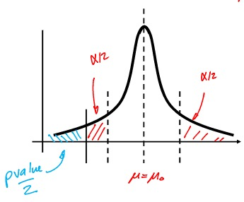
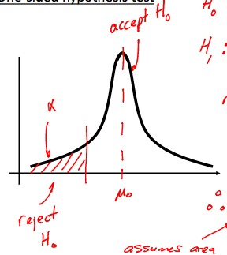
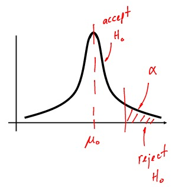
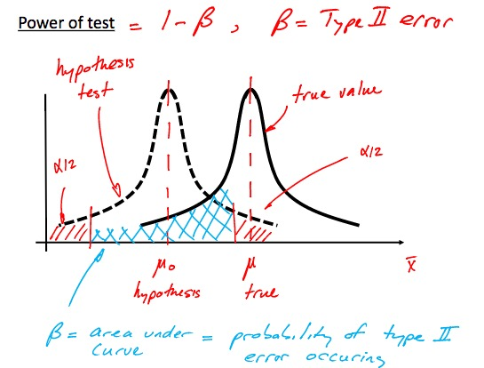
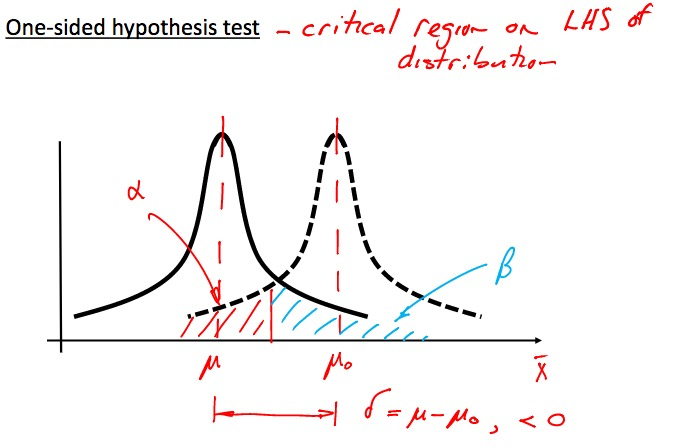
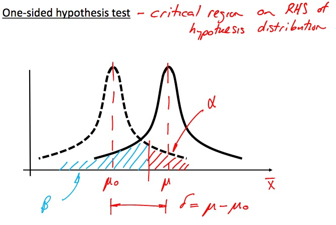

Point Estimate:
if we can only choose one value to estimate the population mean, this is our best guessHypothesis Test:
Test hypothesis of a population parameter (mean, stdev., etc) using sample data
Null Hypothesis: The one skeptical and specific claim to be tested
Alternative Hypothesis: Alternative claim, usually means \(\to\) all other possible values
Steps:
- State \(H_0, H_A\)
- Select test statistic
- Determine reject and non-reject reigons
- Calculate test statistic. Check which region it is in
Approach (1):
Fixed \(\alpha\) (significance leve/probability) valueApproach (2):
Variable \(p\) value. \(p\) is the probability \(H_0\) is false, and parameter purely happened to be that certain value by chance
Remember to make the opposite equality! \(H_0\) should always be the claim!
\(H_0: \mu = \mu_0\)
\(H_A: \mu \neq \mu_0\)Reject \(H_0\) if \(p < \alpha\)

\(H_0: \mu = \mu_0\)
\(H_A: \mu < \mu_0\)Reject \(H_0\) if \(p < \alpha\)

\(H_0: \mu = \mu_0\)
\(H_A: \mu > \mu_0\)Reject \(H_0\) if \(p < \alpha\)



\[\mu = \mu_0 + \delta\]
\[ \begin{align} Z &= \frac{\overline{x} - \mu_0}{\sigma / \sqrt{n}} \\ &= \frac{\mu_0 + \delta - \mu_0}{\sigma/\sqrt{n}} \\ &= \frac{\delta \sqrt{n}}{\sigma} \end{align} \]
To find \(\beta\), shift from truth to \(H_0\) reference frame \[\beta = P(-Z_{\alpha/2} - \frac{\delta \sqrt{n}}{\sigma} < Z < Z_{\alpha/2} - \frac{\delta \sqrt{n}}{\sigma} )\]
Probability of Type I error is just \(\alpha\)
\(P(\text{Type I})\) is reduced with:
- \(\alpha \downarrow\)
- $n $
- \(\alpha \downarrow = \beta \uparrow\)
- \(n \uparrow = \beta \downarrow , \alpha \downarrow\) better


Solving for \(n\) given \(\beta\) \[ \begin{align} n &= \frac{ (Z_{\beta} + Z_{\alpha/2})^2 \sigma^2 }{\delta^2} \tag{for two sided} \\ n &= \frac{ (Z_{\beta} + Z_{\alpha})^2 \sigma^2 }{\delta^2} \tag{for one sided} \end{align}\]
Confidence Level: \(1-\alpha\)
Comparing mean of two populations \(\mu_1, \mu_2\)
\(H_0: \mu_1 - \mu_2 = 0\)
\(H_A: \mu_1 - \mu_2 \neq 0\)
\[Z = \frac{(\overline{x_1} - \overline{x_2}) - (\mu_1 - \mu_2)}{ \sqrt{ \frac{\sigma_1^2}{n_1} + \frac{\sigma_2^2}{n_2} } }\]
If \(\sigma_1, \sigma_2\) is unknown
- Case 1: \(\sigma_1 = \sigma_2 = \sigma\) Can be used when \(\sigma\) is actually unknown, just assume equal (when \(s_1 \approx s_2\)). \[ \begin{align} T &= \frac{ (\overline{x_1} - \overline{x_2}) - (\mu_1 - \mu_2) }{s_p \sqrt{1/n_1 + 1/n_2} }\\ s_p &= \sqrt{\frac{(n_1 - 1) \cdot s_1^2 + (n_2 - 1) \cdot s_2^2}{n_1 + n_2 - 2}} \\ k &= n_1 + n_2 -2 \tag{d.o.f.} \end{align} \] where:
- \(s_p\) is the pooled estimate (weighted avg.) of \(s_1, s_2\)
- Case 2: \(\sigma_1 \neq \sigma_2\) \(\sigma\) are unknown and unequal.
\[ \begin{align} T^* &= \frac{(\overline{x_1} - \overline{x_2}) - (\mu_1 - \mu_2)}{ \sqrt{ \frac{s_1^2}{n_1} + \frac{s_2^2}{n_2} } } \tag{approx. t}\\ k &= \frac{( \frac{s_1^2}{n_1} + \frac{s_2^2}{n_2} )^2 }{ \frac{ ( s_1^2 / n_1 )^2 }{ n_1 - 1 } + \frac{ ( s_2^2 / n_2 )^2 }{ n_2-1 } } \tag{round down} \end{align} \]